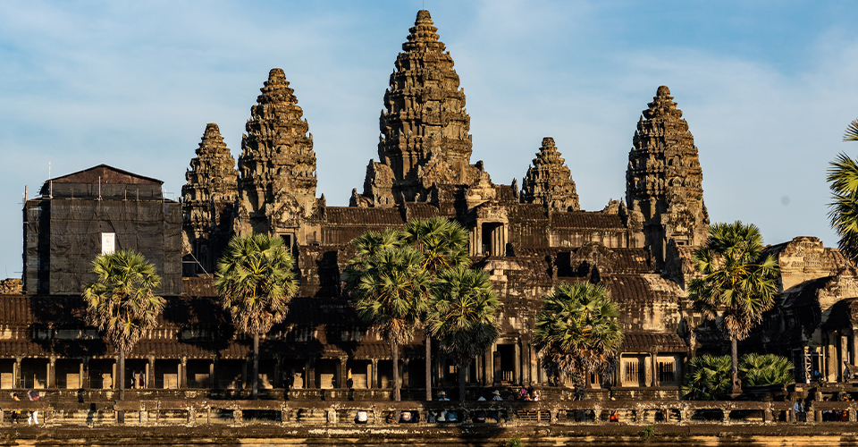
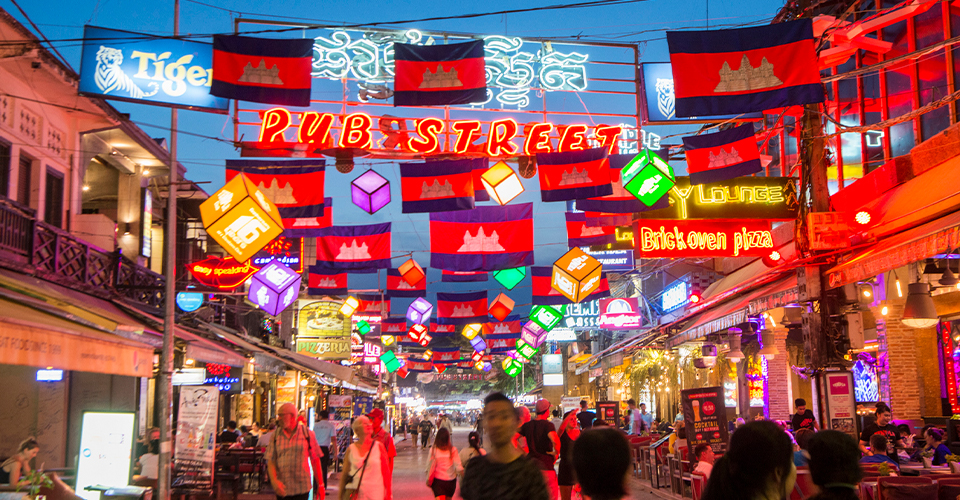
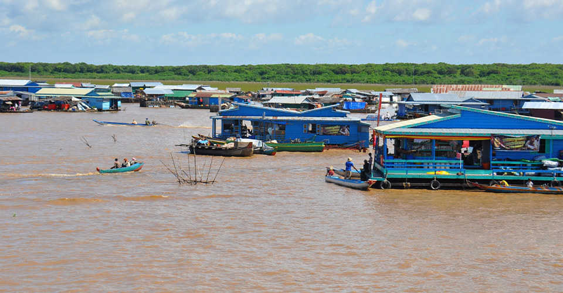
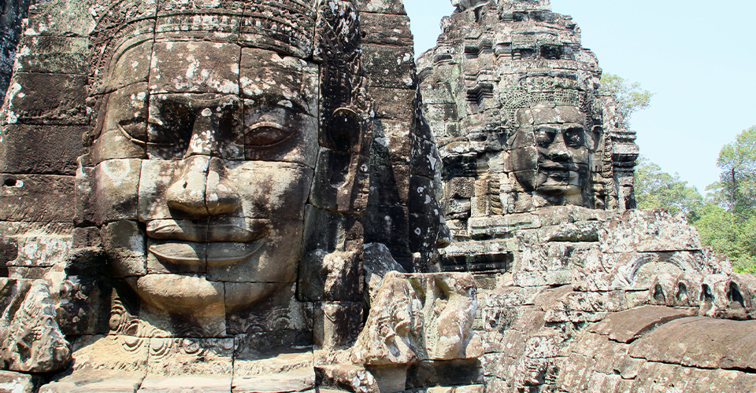
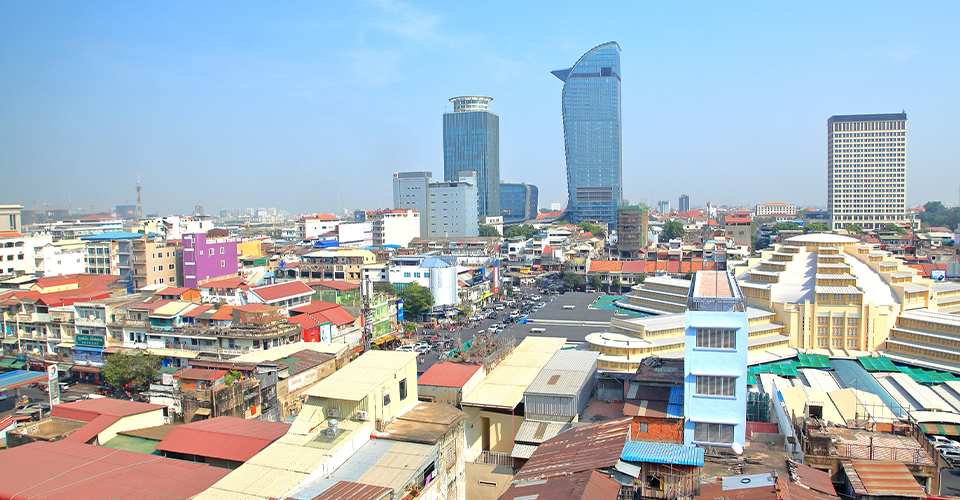

カンボジアの
観光地
ホーム 基本データ 食べ物 観光地
＜アンコール・ワット＞

クメール建築の最高傑作とされる寺院。1992年に世界遺産に登録。
＜シェムリアップ＞

カンボジア北西部の都市。
ホテルや市場が多数あり、お土産や食品が充実。
＜トンレサップ湖＞

東南アジア最大の湖。
湖上には5～8mの水深に耐える高床式の家々が見られる。
＜アンコール・トム＞

アンコール・ワットの北に位置する石造りの城塞都市。
＜プノンペン＞

カンボジアの南に位置する首都。「東洋のパリ」と称される。